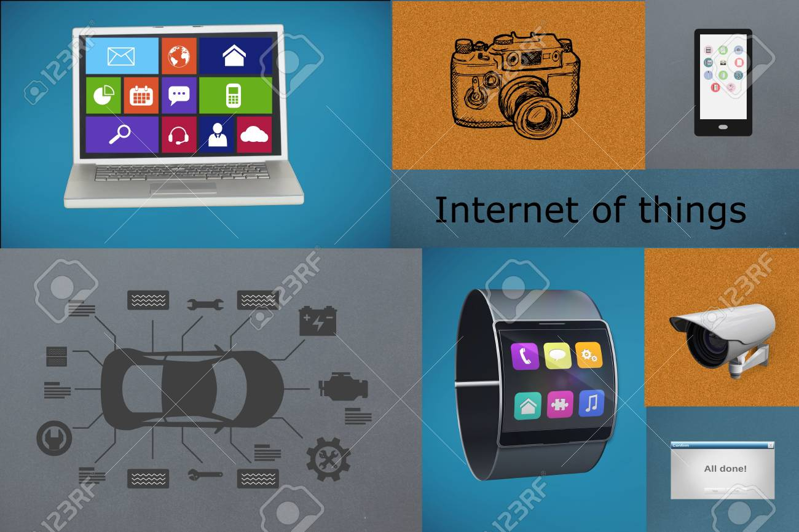

| Evolución de las aplicaciones web. |
| Hitos |
Hechos |
Imágenes |
Referencias |
Internet |
| 1957 |
Agencia de proyectos de investigaciones avanzadas (ARPA). |
 |
- Berners-Lee, T. (1999). Weaving the Web: The Original Design and Ultimate Destiny of the World
Wide Web by its Inventor.
HarperCollins.
- World Wide Web Consortium (W3C). (2001). Resource Description Framework (RDF): Concepts and
Abstract Syntax. W3C
Recommendation. 22 February 2001.
- World Wide Web Consortium (W3C). (2004). OWL Web Ontology Language Overview. W3C Recommendation.
10 February 2004.
Enlace
- Brickley, D., & Miller, L. (2004). FOAF: Friend-of-a-Friend. Namespace Document. January 14,
2004.
- Bizer, C., Heath, T., & Berners-Lee, T. (2009). Linked Data - The Story So Far. International
Journal on Semantic Web
Research, 5(3), 1-22.
- World Wide Web Consortium (W3C). (2020). Semantic Web Use Cases and Applications. W3C Note. 27
February 2020.
|
| 1961 |
Leonard Kleinrock publicó desde el MIT el primer documento sobre la teoría de conmutación de paquetes. |
| 1967 |
Hombre llega a la luna. Marca el inicio de las comunicaciones globales. |
| 1969 |
Se estableció la primera conexión de computadoras, conocida como ARPANET,entre 3 universidades en California y una en Utah, Estados Unidos. |
| 1983 |
ARPANET cambió el protocolo NCP por TCP/IP. |
| 1989 |
Integración de los protocolos OSI en la arquitectura de internet, facilitando el uso de distintos protocolos de comunicaciones. |
| 1990 |
ARPANET se desmantela y aparecen:
MILNET: Carácter militar
INTERNET: Naturaleza publica, orientada al mundo académico, científico e industrial. |
| 2006 |
Internet alcanzó los mil cien millones de usuarios. Se prevé que la cantidad de navegantes de la Red aumentará a 2,000 millones. |
Web 1.0 |
| 1989-1991 |
Tim Berners-Lee inventó la World Wide Web en el CERN (Organización Europea para la Investigación Nuclear) como un sistema para compartir información científica en línea. |
 |
| 1991-1993 |
Se lanzan los primeros navegadores web, como WorldWideWeb (más tarde renombrado Nexus) y NCSA Mosaic. Estos navegadores permiten la visualización de páginas web mediante el hipertexto. |
| 1994 |
Marc Andreessen y Eric Bina desarrollan el navegador web Netscape Navigator, que se convierte en uno de los navegadores más populares de la época. |
| 1995 |
Se funda eBay y Amazon.com, dos de los primeros sitios web comerciales importantes. Además, se lanza Windows 95, que incluye soporte integrado para TCP/IP y acceso a Internet. |
| 1995 |
Se lanza Windows 95 con soporte integrado para TCP/IP y acceso a Internet, lo que facilita la conexión de los usuarios a la web. |
| 1996 |
Marc Andreessen y Eric Bina desarrollan el navegador web Netscape Navigator, que se convierte en uno de los navegadores más populares de la época. |
| 1996 |
Se lanza Google como un motor de búsqueda. |
| 1997 |
Se lanza el servicio de correo electrónico gratuito Hotmail. |
| 1998 |
Se funda PayPal como un servicio de pago en línea. |
Web 2.0 |
| 2000 |
Las aplicaciones web comienzan a adoptar interactividad y colaboración, permitiendo a los usuarios contribuir con contenido y participar activamente en la creación de la web. |
 |
| 2002 |
Se lanza Blogger, una plataforma de blogs que facilita la publicación de contenidos en línea. |
| 2003 |
Se lanza WordPress, otra plataforma de blogs que ofrece mayor flexibilidad y personalización. |
| 2004 |
Se lanza Facebook, inicialmente como una red social exclusiva para estudiantes de la Universidad de Harvard, pero luego se expande a otras universidades y al público en general. |
| 2005 |
Se lanza YouTube, una plataforma para compartir vídeos en línea que revoluciona la forma en que se consume contenido audiovisual en la web. |
| 2006 |
Twitter se lanza al público, permitiendo a los usuarios enviar y leer mensajes cortos de texto, conocidos como "tweets". |
| 2007 |
Apple lanza el iPhone, popularizando los teléfonos inteligentes y cambiando la forma en que la gente accede a Internet y utiliza aplicaciones web. |
| 2007 |
Se lanza Spotify, un servicio de streaming de música que ofrece acceso a una amplia biblioteca de canciones bajo demanda. |
| 2008 |
Se lanza Google Chrome, un navegador web desarrollado por Google que introduce características avanzadas y un enfoque en el rendimiento y la seguridad. |
| 2009 |
Se lanza WhatsApp, una aplicación de mensajería instantánea que permite a los usuarios enviar mensajes de texto, imágenes, videos y mensajes de voz a través de Internet. |
Web 3.0 |
| 2001 |
Tim Berners-Lee, considerado el padre de la World Wide Web, presenta por primera vez el concepto de la Web Semántica, que se convertiría en un componente fundamental de la Web 3.0. |
 |
| 2006 |
Se publica el libro "La Web Semántica" de Tom Gruber y James Hendler, que explora en profundidad los principios y aplicaciones de la Web Semántica. |
| 2007 |
Google lanza el proyecto Freebase, una base de datos de conocimiento de código abierto destinada a proporcionar información estructurada y enlazada que pueda ser utilizada por humanos y máquinas por igual. |
| 2009 |
Se lanza Bitcoin, la primera criptomoneda descentralizada basada en blockchain, sentando las bases para la descentralización en la Web 3.0. |
| 2013 |
Vitalik Buterin propone Ethereum, una plataforma de computación descentralizada que permite la ejecución de contratos inteligentes y la creación de aplicaciones descentralizadas (DApps). |
| 2015 |
Ethereum se lanza oficialmente, brindando a los desarrolladores la capacidad de construir DApps y contratos inteligentes utilizando su blockchain. |
| 2017 |
La popularidad de las criptomonedas y las ICOs (Ofertas Iniciales de Monedas) alcanza su punto máximo, atrayendo una gran atención hacia la tecnología blockchain y sus aplicaciones potenciales. |
| 2018 |
Se lanza Filecoin, un protocolo de almacenamiento de datos descentralizado basado en blockchain que permite a los usuarios almacenar, compartir y vender datos de manera segura y eficiente. |
| 2019 |
Se lanza el Proyecto Solid, iniciado por Tim Berners-Lee, con el objetivo de crear una plataforma descentralizada donde los usuarios puedan almacenar sus datos de manera segura y controlar quién accede a ellos. |
| 2020 |
La DeFi (Finanzas Descentralizadas) experimenta un rápido crecimiento, con aplicaciones financieras construidas sobre blockchains como Ethereum, permitiendo transacciones financieras sin intermediarios tradicionales. |
| 2021 |
Los NFT (Tokens No Fungibles) se vuelven populares como una forma de autenticar y vender obras de arte digitales y otros activos digitales únicos en el blockchain. |
| 2022 |
Se produce un aumento significativo en el desarrollo de metaversos y mundos virtuales descentralizados, donde los usuarios pueden interactuar, crear y poseer activos digitales en entornos virtuales compartidos. |
Web 4.0 |
| 2020 |
Continuación del desarrollo de la inteligencia artificial (IA) y el aprendizaje automático, con avances significativos en áreas como el procesamiento del lenguaje natural, la visión por computadora y la toma de decisiones autónomas. |
 |
| 2020 |
Mayor adopción de la realidad aumentada (AR) y la realidad virtual (VR) en una variedad de aplicaciones web, desde el comercio electrónico hasta la educación y el entretenimiento. |
| 2021 |
Aumento de la automatización en una amplia gama de sectores y aplicaciones, con sistemas inteligentes que pueden realizar tareas complejas y adaptarse dinámicamente a diferentes situaciones. |
| 2021 |
Avances en la ciberseguridad y la privacidad de los datos, con la adopción generalizada de tecnologías como la encriptación homomórfica y la computación confidencial, que garantizan la protección de la información personal y sensible. |
| 2022 |
Integración más profunda de la Internet de las Cosas (IoT) en la infraestructura web, con dispositivos conectados que se comunican de manera más inteligente y colaborativa, creando sistemas más eficientes y autónomos. |
| 2023 |
Avances en la computación cuántica, con el desarrollo de algoritmos y sistemas cuánticos más potentes que pueden resolver problemas computacionales complejos de manera más eficiente y rápida. |
| 2023 |
Mayor integración de la Web 3D y los entornos virtuales en la experiencia web, con la creación de mundos virtuales compartidos y persistentes que permiten a los usuarios interactuar, crear y colaborar en tiempo real. |
| 2024 |
Desarrollo de economías digitales más maduras y diversificadas, con la tokenización de una amplia gama de activos físicos y virtuales y la creación de nuevos modelos de negocio basados en la propiedad y el intercambio de activos digitales. |